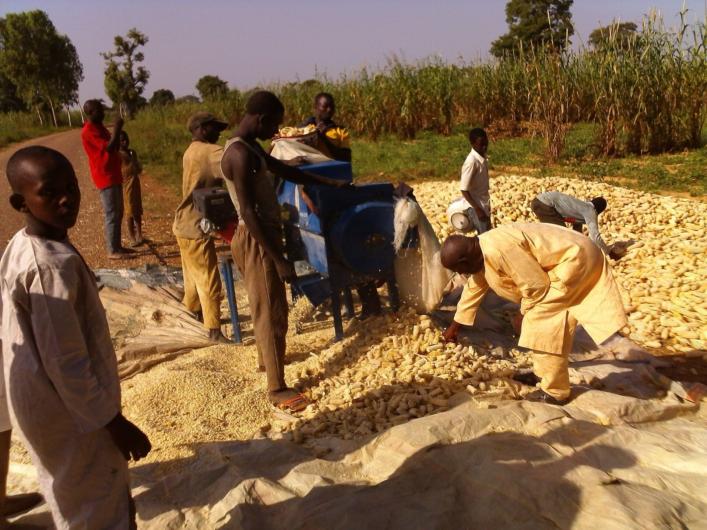
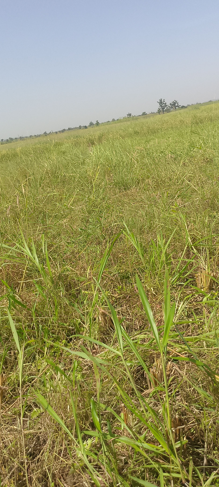

Our Agribusiness
Integrated farming operations across crops, cereals, fruits, plantations, livestock, poultry, dairy, fisheries and beekeeping — one farm, many value chains.
Farming the Jodozo Way
Our agribusiness is built on integration. Crops feed our animals, animals fertilise our fields, and everything flows into our processing and distribution network. This closes waste loops, reduces costs and keeps quality under our control from seed to shelf.
Whether it is a cereal field, a dairy herd or a fish pond, every Jodozo enterprise runs on the same principles — modern agronomy, mechanisation and sustainability.
- Crop agriculture: cereals, fruits, plantations & mixed farming
- Animal agriculture: cattle, poultry, dairy, fish & bees
- Fully mechanised operations with in-house irrigation

From Field to Harvest
Crop Production
Maize, soybean, vegetables and staple crops grown on mechanised fields.
Cereal Farming
Maize, millet, sorghum and rice for food and agro-processing supply.
Fruit Farming
Mango, citrus, pineapple and orchard fruits for fresh and processed markets.
Plantation Agriculture
Long-term tree crops and orchard plantations managed commercially.
Mechanised & Mixed Farming
Crop–livestock integration powered by our own machinery fleet.
Farm Inputs
Certified seeds, fertilizers and crop protection for our fields and yours.
Livestock, Poultry, Dairy & More
Livestock Farming
Cattle, sheep and goats raised on well-managed ranches.
Poultry Farming
Broilers, layers and hatcheries producing eggs and quality chicken.
Dairy Farming
Fresh milk collection, cooling and dairy product processing.
Fisheries
Catfish and tilapia ponds with modern aquaculture practices.
Beekeeping
Apiaries producing natural honey, wax and pollination services.
Animal Feed Production
Formulated feeds and supplements for healthy, productive animals.
Want Fresh Produce or Farm Collaboration?
Buy from our farms, become an outgrower or partner on a farming project.